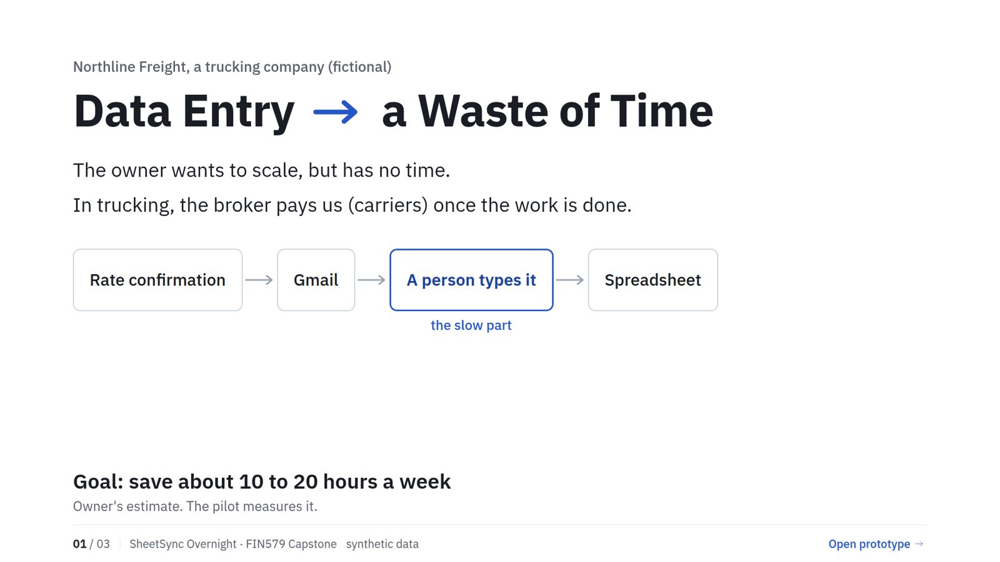
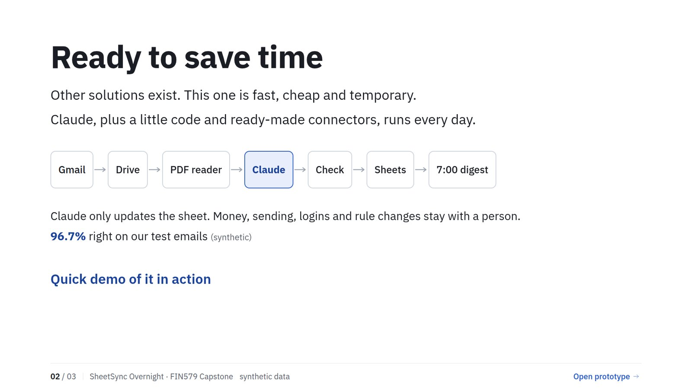
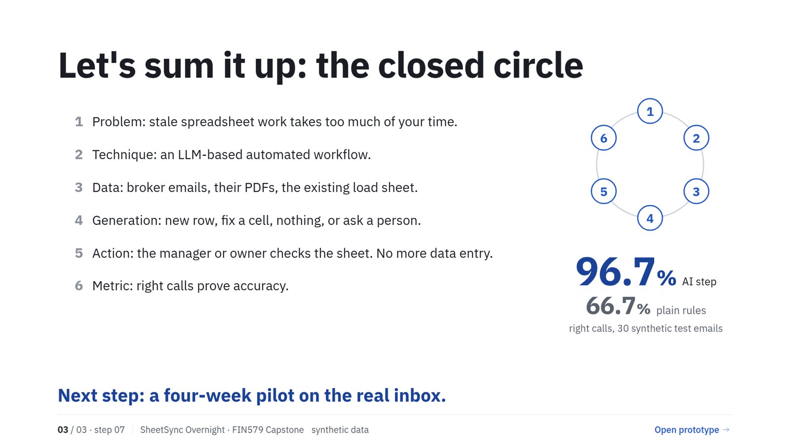

FIN579 Capstone · Ranvir Thind
SheetSync Overnight
AI that ends data entry for a small trucking company. Every night it reads broker emails and their PDFs, updates the load sheet, and asks a person whenever it should.
Watch the prototype (1:58)
Six made-up emails go through Gmail, Drive, a PDF reader, Claude, a code check and Google Sheets. Three are handled on their own and three wait for a person. Mockup, nothing connected, computer voice.
The pitch in three slides



Northline Freight is fictional and every email, load and number is synthetic. The 96.7% is a ceiling on test data, not a production result.